Verificador. Ramo fase2-para-revisar, commit ce2b835, em livro novo (endireitar antes de cortar). Pilotei a janela de verdade com mouse e teclado nativos, em 1280 x 657, com pasta de dados de teste. Não mudei código e não marco nada como aprovado.
PRONTO PARA CONFERIR: os consertos valem na janela de verdade e a regra voltou a decidir igual nos dois caminhos (22 vão, 75 certas); sobram três coisas que são escolha do Samuel (a tela que mostra a letra que o PDF apaga, a lista só com as páginas visitadas e as contagens que não batem) e um custo novo: depois de folhear 12 páginas o programa trabalha por trás uns 45 segundos, contra 9 antes.
O programa passa a avisar, página por página, quando o "Só as letras" do Preto e branco pode ter estragado alguma coisa: um desenho ou letra grande que sumiu, texto que saiu falhado, página que não tem nada do livro. Cada aviso traz o botão do conserto: "Trazer de volta nesta página", "Deixar em branco", "Tirar do livro", "Desfazer".
Quando o texto sai muito falhado (4 linhas ou mais), o programa escurece sozinho a força do preto só naquela página e avisa; dá para desfazer, e há uma caixinha para desligar na tela "O que fazer". Ao clicar em "Confirmar e processar" com avisos sem olhar, aparece a lista "Página N - motivo", com "ver" e "continuar assim mesmo".
O Kaique pode dizer "está bom" numa página, num motivo de uma página, num motivo em todas ou em tudo, e o Ctrl+Z desfaz. Novo desta rodada: os avisos de página em branco ganharam o botão "está bom assim", e na aba Marcar as áreas que o programa achou se acertam sozinhas uns 10 segundos depois de chegar numa página nova.
| O que | Como | Resultado |
|---|---|---|
| 1. A medida não depende mais da prévia (Graduale 221; as 89 páginas) | janela + máquina | Vale. Graduale 221 sem aviso; 22 vão e 75 certas nos dois caminhos, nenhuma página diferente. |
| 2. Dois cliques no cartão do filtro | janela | Vale. Abre o "Ver de perto", não grava ação, o aviso continua. |
| 3. "está bom assim" em "Parece em branco" e "Página sem conteúdo" | janela | Vale nas três páginas (Gladstone 18, Egenloff 12, Rariora 8); Ctrl+Z desfaz. |
| 4. Teclado depois do clique no botão do aviso | janela (nunca ativa) | Em parte. O botão não fica com o teclado e a barra de espaço funciona. A seta não troca de página na janela de teste, igual no programa de hoje. |
| 5. Frase da janela "Antes de processar" | janela | Vale: "75 páginas (104 avisos na lista)". As três contagens continuam diferentes (pergunta). |
| 6. "usar mais escuro" com a força em 85 | janela | Vale: o botão não aparece (Egenloff 3). |
| 7. Força do preto sozinha, mais cautelosa | janela | Vale. Camões 27 e 104: age. Palatino 66, Egenloff 3 e Camões 11: só o aviso. |
| 8. Aba Marcar se acerta sozinha | janela | Acontece: Graduale 221, 9 áreas viram 18 em 10,7 s. A área marcada à mão no intervalo não se perdeu. |
| Processar até "Ficou pronto!" no programa novo | janela | Com aviso pendente, "continuar assim mesmo" e "Processar": "Ficou pronto!" em 8 s, PDF com 6 páginas, erros.log vazio. |
| Folhear com "Só as letras" (hoje contra o ramo) | janela | Trocar de página: igual ou melhor. Por trás depois de parar: 44 a 47 s contra 8 a 9 s. |
| Velocidade (Marial de 300 folhas, 2 rodadas de cada, alternadas) | máquina | Mais lento em: Processar 10 páginas em Mágico pro |
O que olhar: O aviso laranja, o quadradinho laranja em volta da letra T nos cartões e o botão "Trazer de volta nesta página".
O aviso aparece sozinho uns 8 segundos depois de chegar na página, com o lugar marcado em laranja. O botão troca só essa página para "Guardar tudo", o aviso some e a página sai da lista. O Ctrl+Z desfaz.
Ressalva: Em 1280 x 657 os cartões são pequenos: a marca laranja quase não se vê e o nome do filtro fica escrito por cima da miniatura. No tamanho de maximizada aparece bem. Repare que no cartão a letra T continua lá: é o defeito do quadro seguinte.
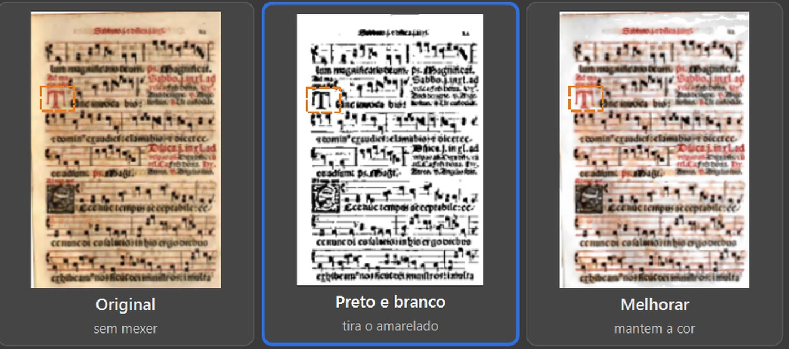
A marca laranja em volta da letra T nos cartões (ampliado, janela no tamanho de maximizada)
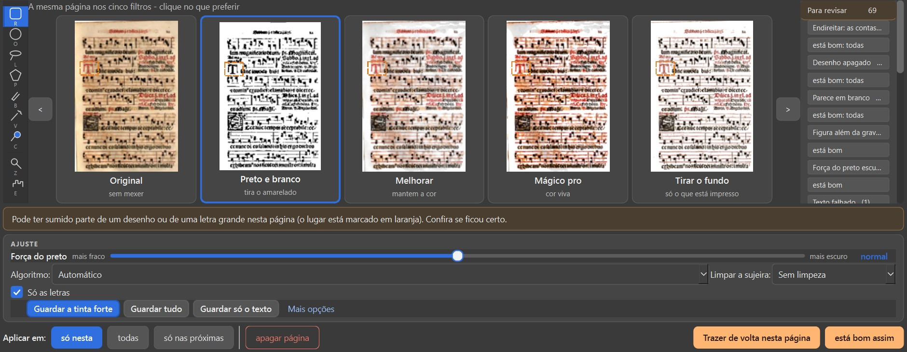
Os cinco cartões, o aviso e os dois botões
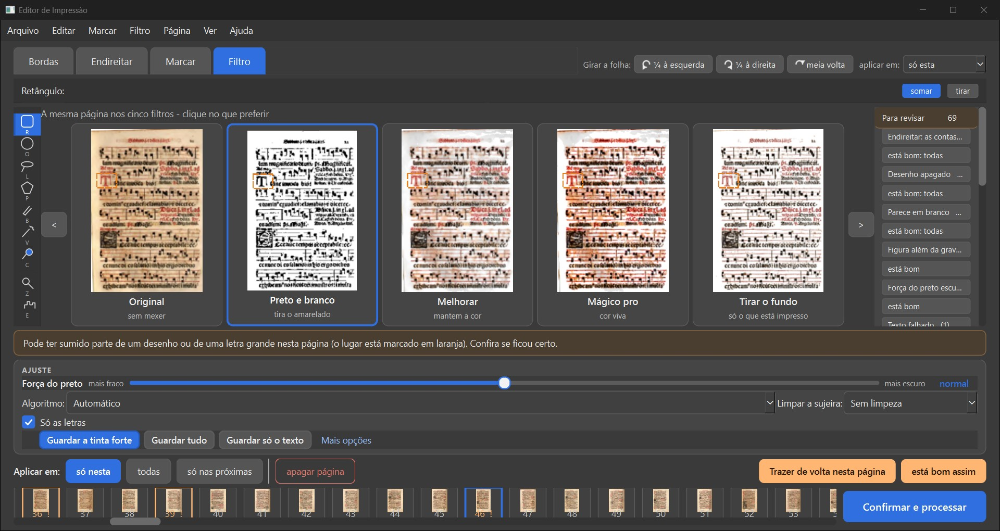
A tela inteira no tamanho de janela maximizada (1920 x 1020), página 46 de 298
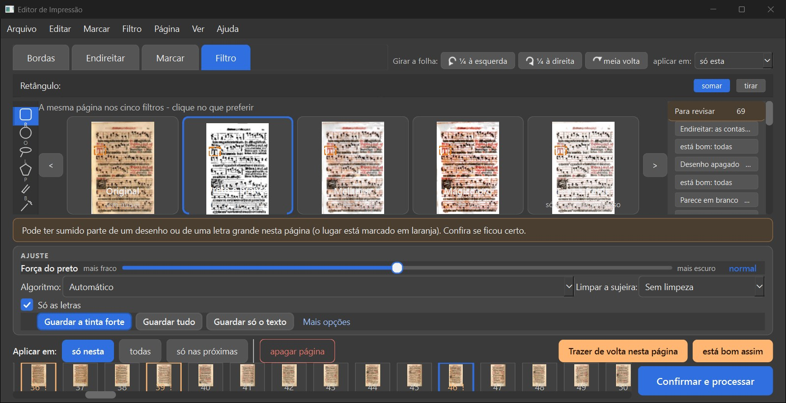
A mesma tela em 1280 x 657: os cartões ficam pequenos e o nome do filtro fica por cima da miniatura
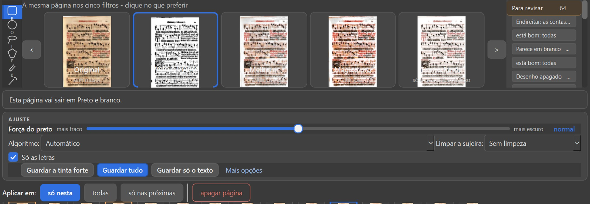
Depois de "Trazer de volta nesta página": "Guardar tudo" ligado, aviso e marca sumiram
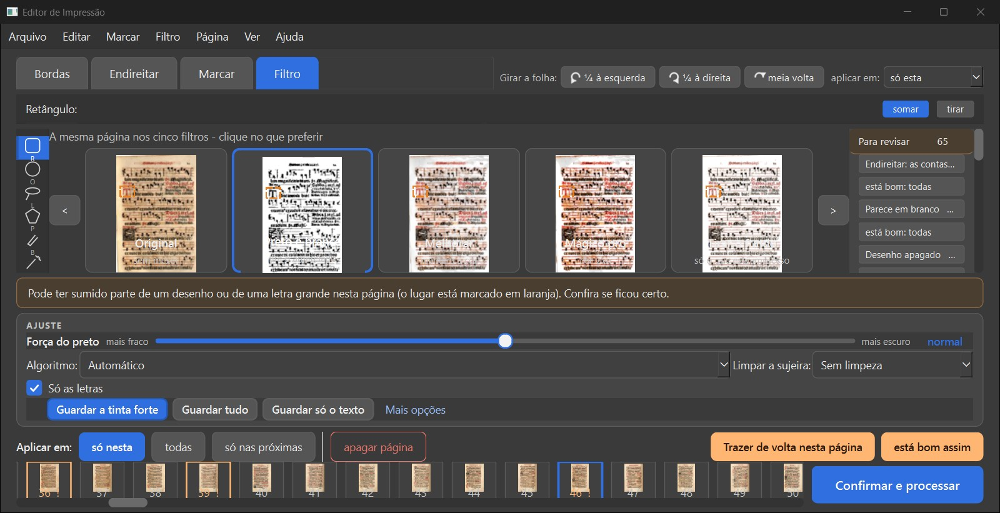
Depois do Ctrl+Z: o aviso e os botões voltaram
O que olhar: A letra T grande à esquerda: na tela ela aparece; na página do PDF que saiu, não.
O aviso diz a verdade, a tela não. A página que aparece na tela é desenhada pequena, e nesse tamanho a letra T fica. O PDF é desenhado grande, e nele a letra some. Processei o livro na janela: no PDF a letra T sumiu mesmo.
Ressalva: Não foi mexido nesta rodada, de propósito: é a pergunta "A tela igual ao PDF", mais abaixo. Conferi de novo no programa novo: o "Ver de perto" continua mostrando a letra T.
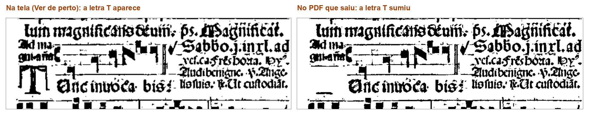
O mesmo pedaço da página 46: à esquerda o "Ver de perto" da janela; à direita o PDF que o programa gerou
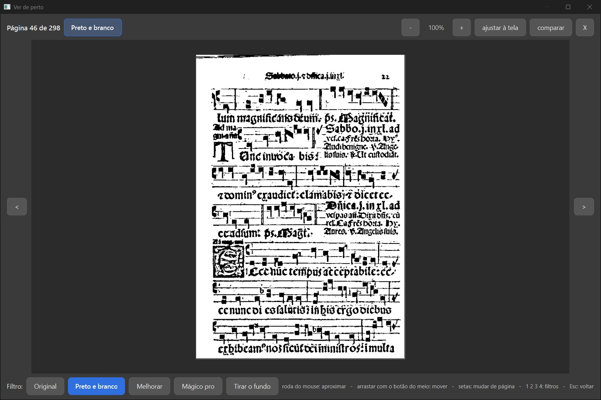
O "Ver de perto" inteiro, com o aviso de pé: a letra T está lá
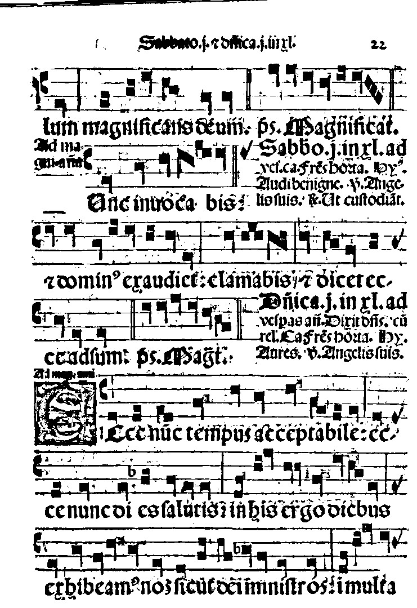
A página inteira tirada do PDF gerado pela janela: no lugar da letra T sobrou um tracinho
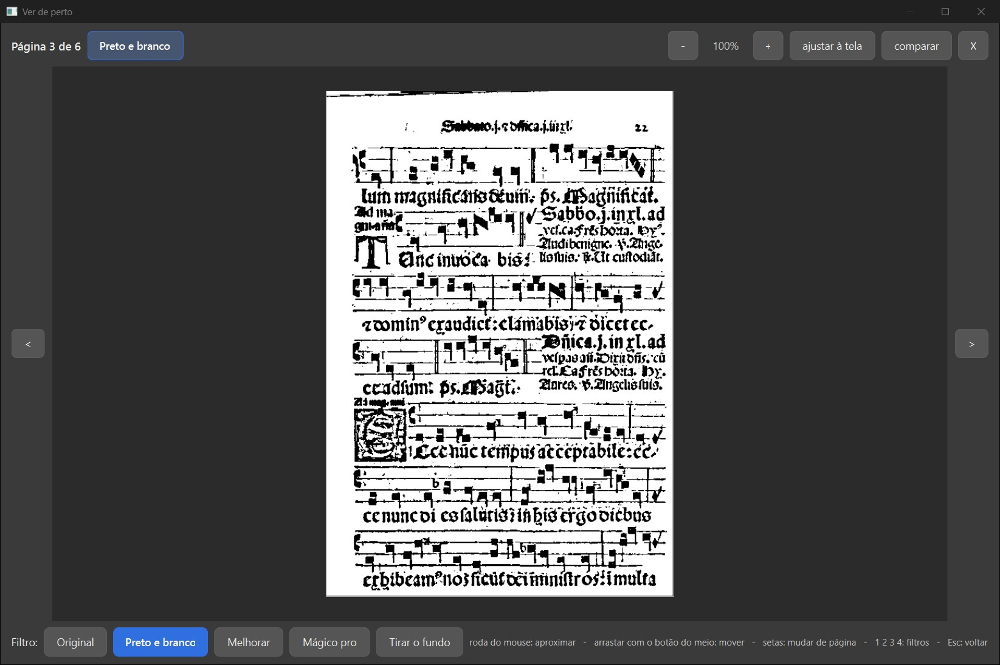
No programa novo (segunda conferência): o "Ver de perto" da mesma página continua com a letra T
O que olhar: O cartão do Preto e branco sem as pautas, a marca laranja na página inteira e o botão "Trazer de volta nesta página".
No jeito de fábrica ("Guardar a tinta forte") a página 222 não tem aviso nenhum. Trocando para "Guardar só o texto", o aviso aparece e o botão devolve só essa página para "Guardar a tinta forte". As outras páginas não mudam.
Ressalva: Usei um pedaço de 7 páginas do Graduale (219 a 225), para não abrir as 750 folhas. Na janela a página se chama 4.
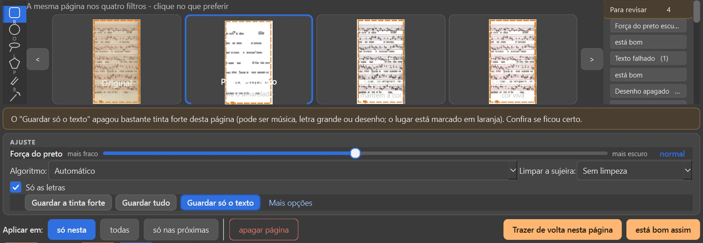
O aviso do "Guardar só o texto", com a marca laranja (ampliado)
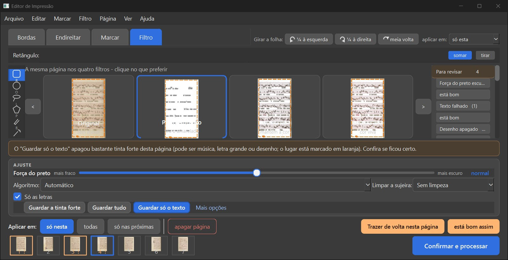
A tela inteira
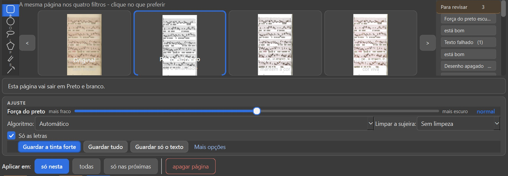
Depois do botão: a música voltou e o aviso sumiu
O que olhar: Os três botões: "Deixar em branco", "Tirar do livro" e, novo, "está bom assim".
"Deixar em branco" põe uma folha branca no lugar (o livro continua com o mesmo número de páginas). "Tirar do livro" apaga a página. "está bom assim" tira só esse aviso da lista e deixa a página como está. Os três voltam com Ctrl+Z.
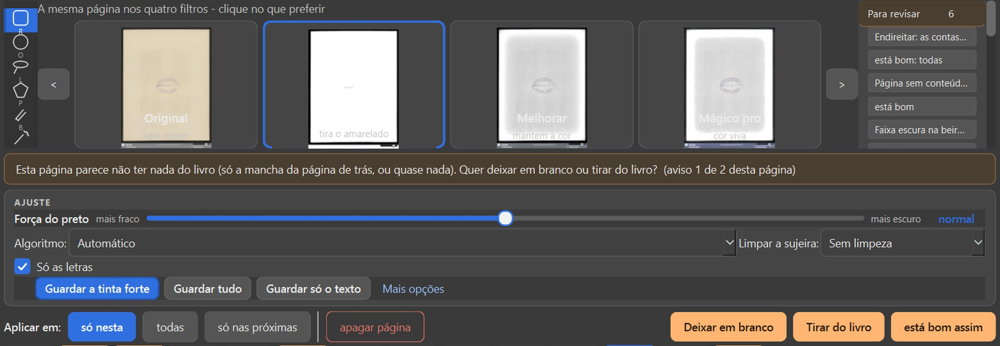
Egenloff 12: o aviso e os três botões (ampliado)
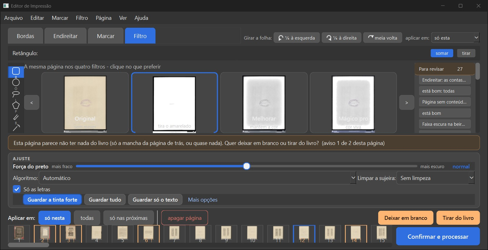
A tela inteira
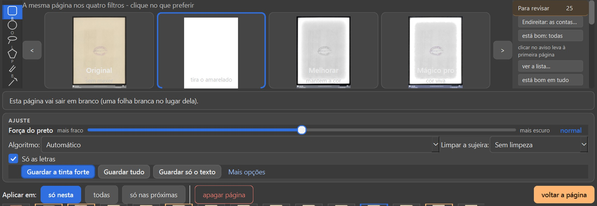
Depois de "Deixar em branco": folha branca no lugar e botão "voltar a página" (print da primeira conferência)
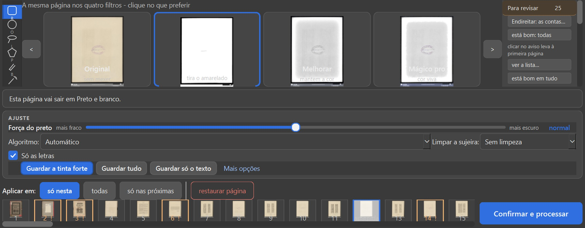
Depois de "Tirar do livro": a página 12 fica apagada na tira (print da primeira conferência)
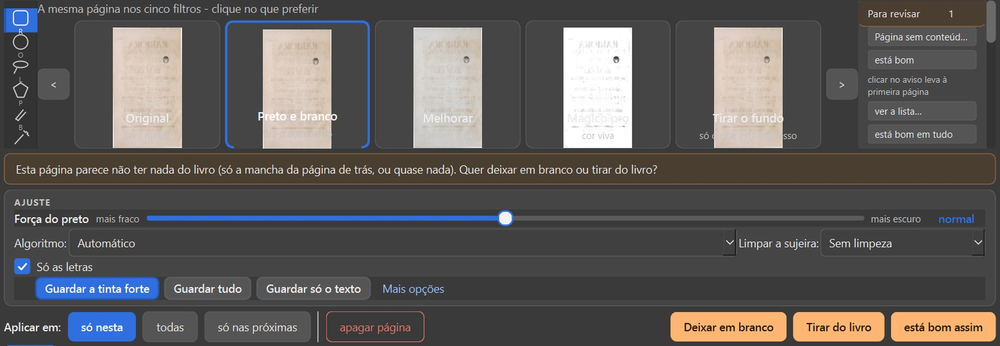
Rariora 8: o mesmo aviso, com os três botões
O que olhar: A página tem o título "DA ORAÇÃO" e mesmo assim o programa pergunta se quer deixar em branco ou tirar do livro.
O erro da Gladstone 18 continua (já está na Lista de bugs e não era deste trabalho): a página tem título e o programa diz que parece em branco. O que mudou: agora o aviso tem o botão "está bom assim", que deixa a página como está.
Ressalva: O aviso errado continua vindo com "Tirar do livro" ao lado. Com o terceiro botão há saída certa; o conserto do aviso em si fica para a Lista de bugs.
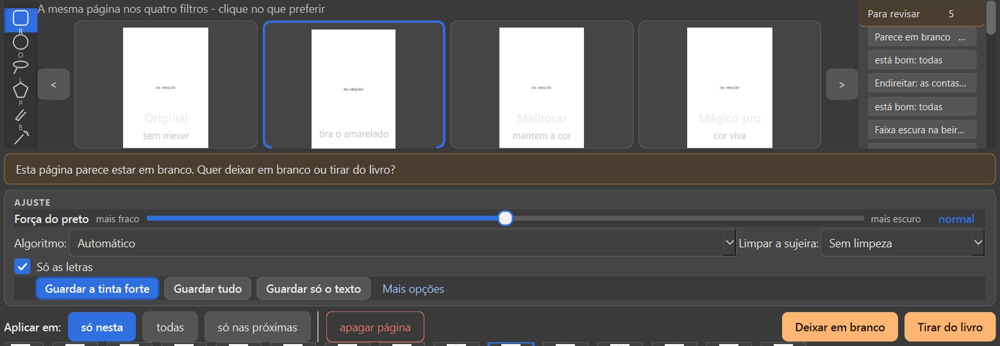
Gladstone 18: "Parece em branco", agora com "está bom assim" (ampliado)
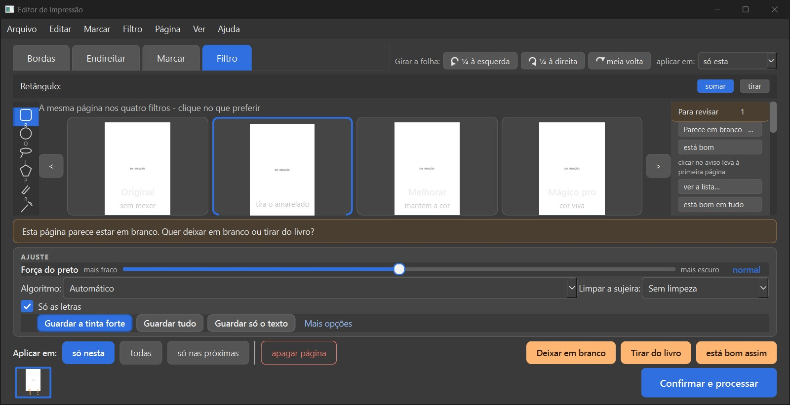
A tela inteira
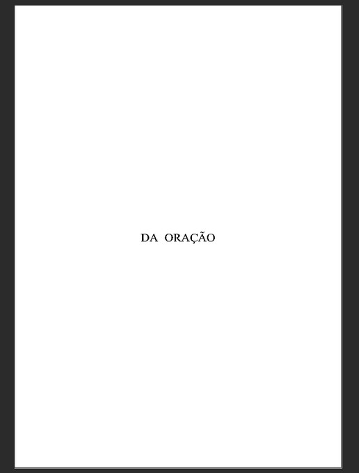
A página de perto: tem o título "DA ORAÇÃO"
O que olhar: O medidor em "bem forte", o aviso "escureci a força do preto só nela" e o botão "Desfazer".
A força só muda sozinha quando 4 linhas ou mais saem falhadas. No Camões 27 e no 104 ela vai de 50 para 85 e avisa, com "Desfazer". No Egenloff 3, no Palatino 66 e no Camões 11 ela não mexe mais: fica só o aviso "Texto falhado", com o botão "usar mais escuro". Com a força já em 85, esse botão não aparece.
Ressalva: A caixinha só aparece depois de rolar a lista de opções para baixo. No Egenloff 3, com a força em 85, a frase do aviso ainda diz "tente a força do preto mais escura".
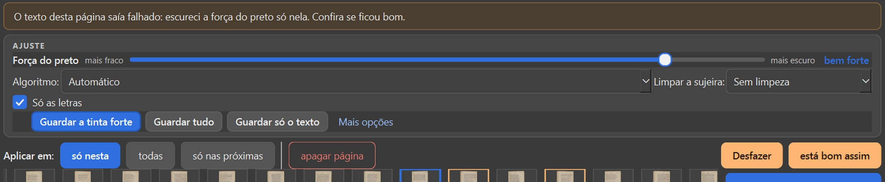
Camões 27: o aviso, o medidor em "bem forte" e o "Desfazer" (ampliado)
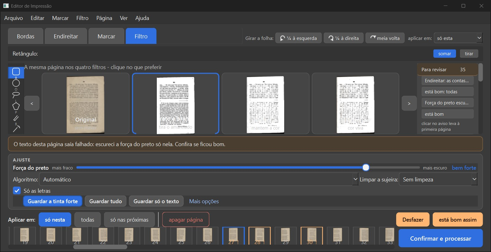
A tela inteira
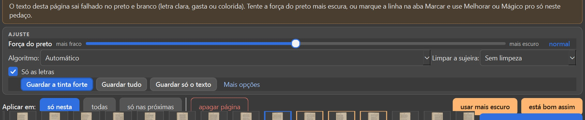
Depois do "Desfazer": força normal e o aviso "Texto falhado" (print da primeira conferência)
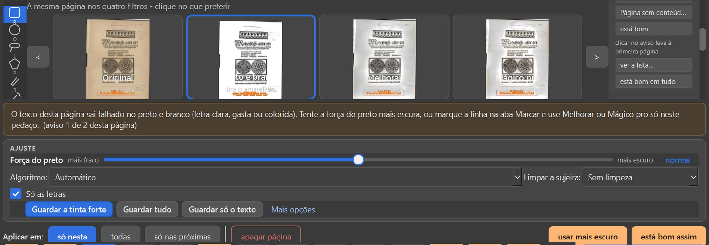
Egenloff 3 agora: só o aviso "Texto falhado", força normal
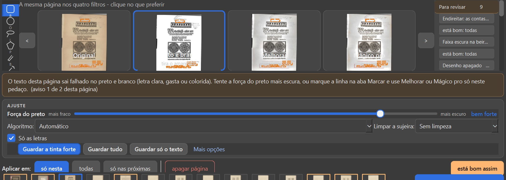
Egenloff 3 depois de "usar mais escuro": o botão sumiu, fica "está bom assim"
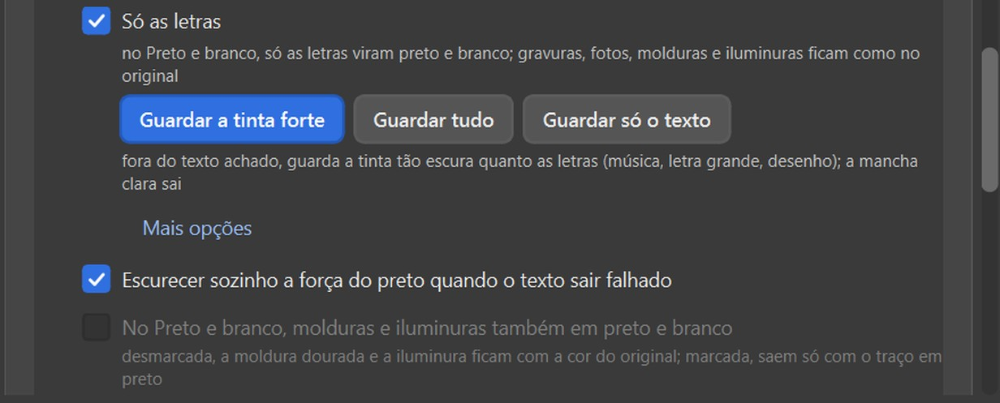
A caixinha "Escurecer sozinho a força do preto quando o texto sair falhado"
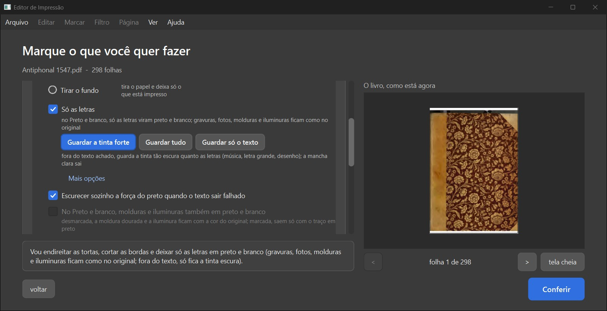
A tela "O que fazer" inteira
O que olhar: As linhas "Página N - motivo", e os botões "ver" e "continuar assim mesmo".
"ver" leva à página e não processa. "continuar assim mesmo" segue para escolher a pasta e processa até "Ficou pronto!". Fechar no X não processa. A frase de cima agora diz quantas páginas e quantos avisos: "75 páginas (104 avisos na lista)".
Ressalva: A lista continua juntando os avisos novos com os de sempre (Camões: 104 linhas, 4 da regra nova). E os três números continuam diferentes: é a pergunta "As contagens", mais abaixo.
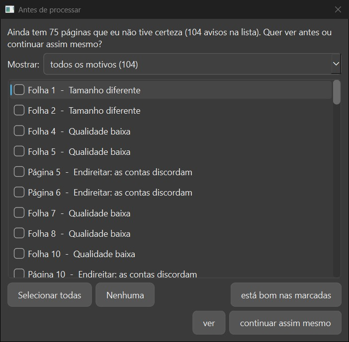
Camões: a frase nova, "75 páginas (104 avisos na lista)"
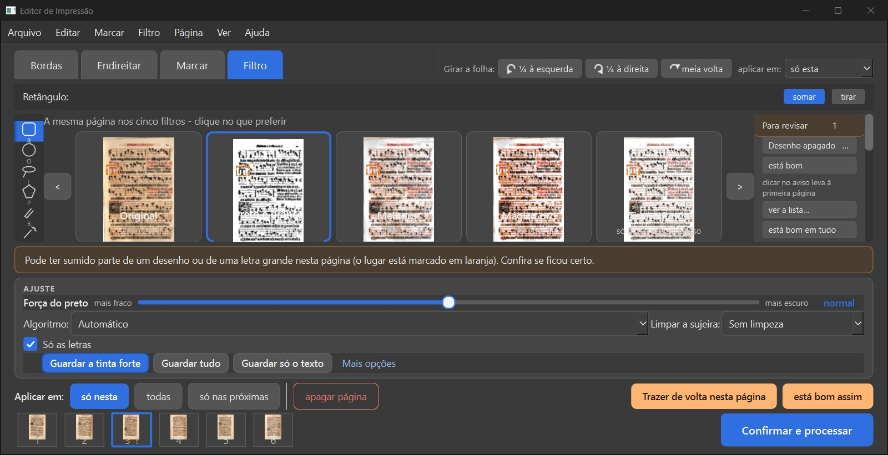
Depois de "ver": o programa foi para a página do aviso e não processou
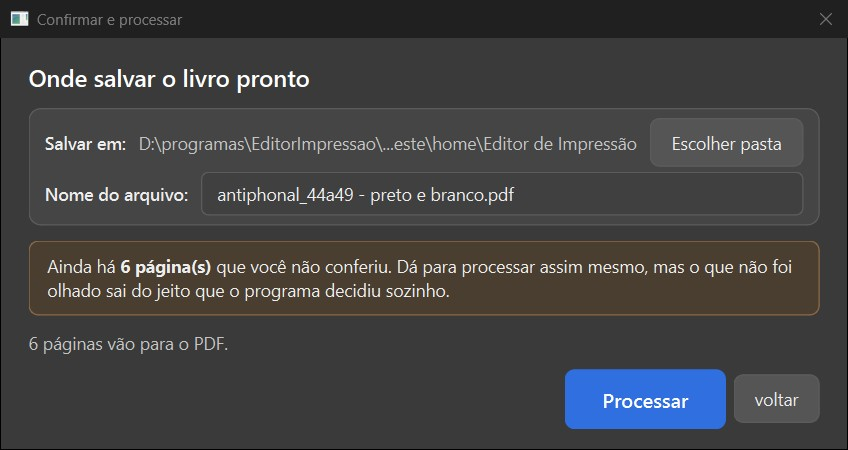
Depois de "continuar assim mesmo": a janela de salvar
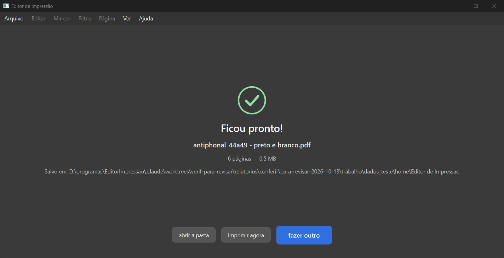
"Ficou pronto!"
O que olhar: O número do painel "Para revisar" e o contador de páginas descendo em cada nível.
Um motivo de uma página: de 31 para 30 avisos, e o aviso seguinte da página aparece. Um motivo em todas: de 31 para 6. Em tudo: "tudo certo". Na lista grande, marquei duas linhas e dei "está bom nas marcadas": de 31 para 29. O Ctrl+Z desfez cada um.
Ressalva: Os botões "ver a lista…" e "está bom em tudo" ficam no fim do painel e só aparecem rolando a coluna da direita.
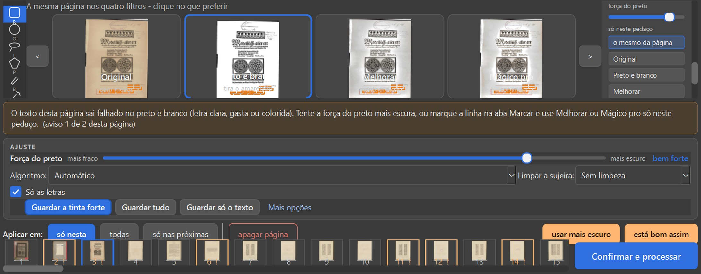
Egenloff 3 depois de "está bom assim" no primeiro aviso: agora mostra o segundo (aviso 1 de 2)
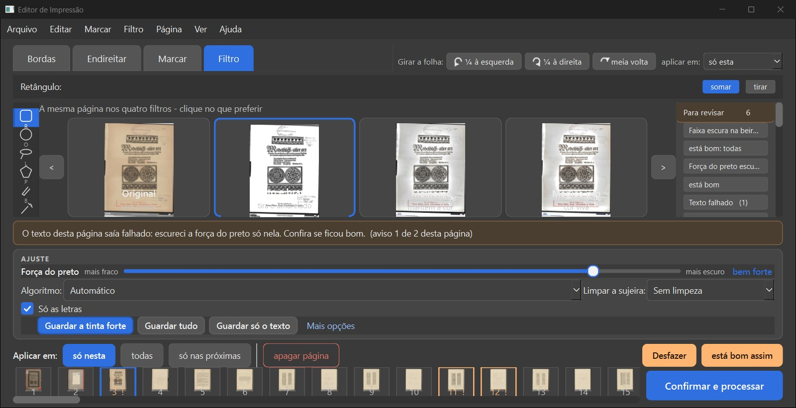
Depois de "está bom: todas" no motivo do endireitar: sobram 4 páginas
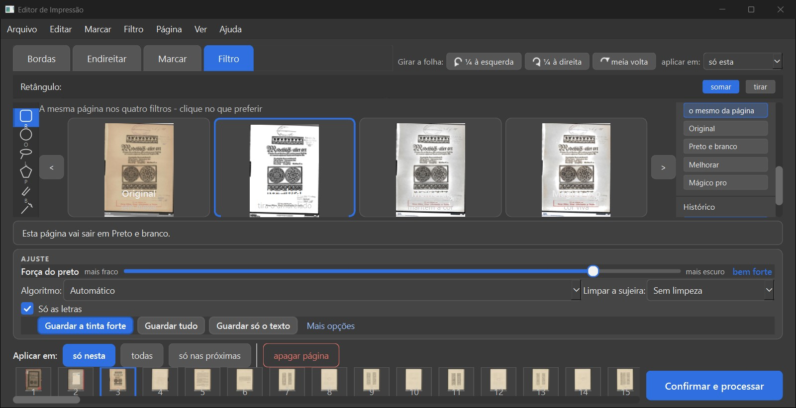
Depois de "está bom em tudo": nenhuma página marcada na tira
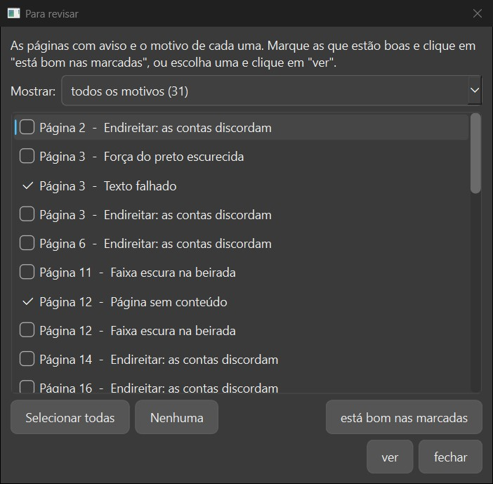
A lista grande com duas linhas marcadas
O que olhar: Não há mais aviso nem marca laranja nesta página.
Na primeira conferência a janela dava "Desenho apagado" aqui, e medindo direto não dava. Agora a medida usa sempre as áreas achadas na página do tamanho do PDF. Na janela a página ficou sem aviso, e as 89 páginas dão o mesmo resultado nos dois caminhos.
Ressalva: O resultado é 22 vão e 75 certas, não os 21 e 78 combinados com o Samuel: 5 páginas ainda decidem diferente do estudo no livro novo (Antiphon 260, Cursus 3, Matemática 72, Opus Majus 20, Palatino 66). Isso já estava escrito pelo implementador.
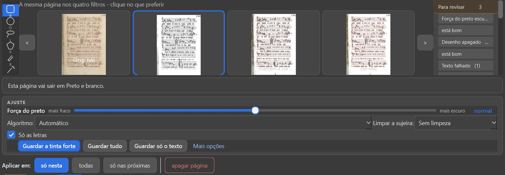
Graduale 221 na janela, depois do conserto: sem aviso (ampliado)
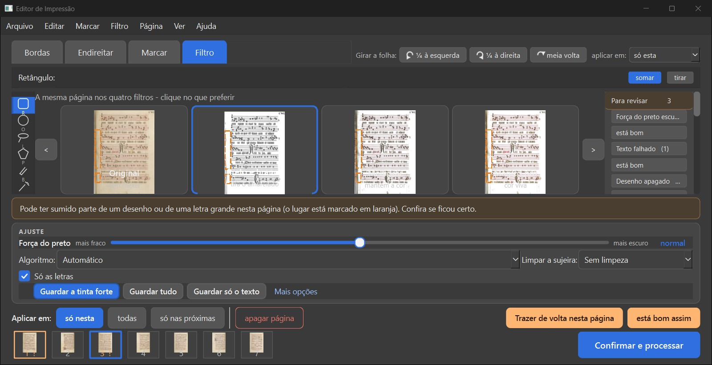
A tela inteira (página 3 do pedaço de 7 páginas)
O que olhar: A faixa preta larga à direita da página e a linha preta à esquerda.
O aviso faz sentido para quem olha: a página sai com uma faixa preta larga. O que está errado é o corte do livro novo, que deixa a faixa; no corte de antes ela não sobrava. O aviso só conta o que o corte fez.
Ressalva: É defeito do corte do livro novo, não do aviso. O conserto do corte está sendo conferido em outro ramo; não reabri esta página na segunda conferência.
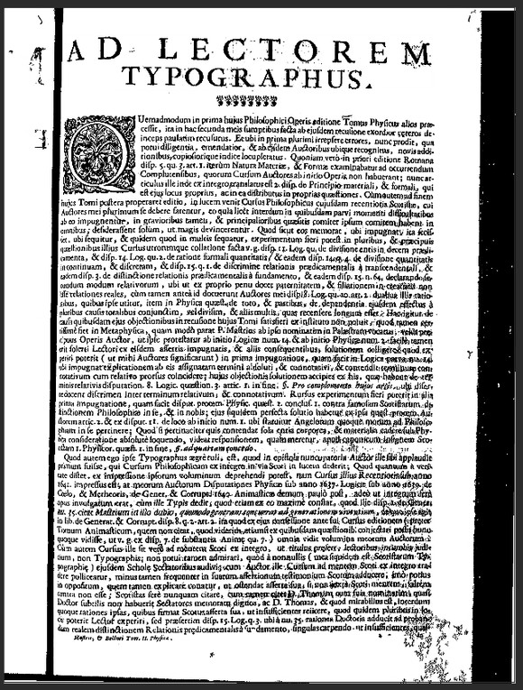
A página 3 como sai em Preto e branco, de perto
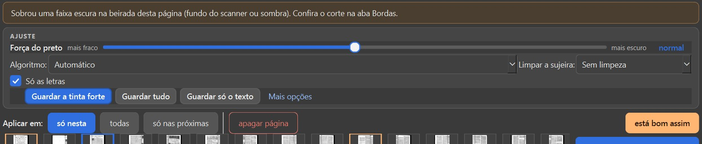
O aviso "Faixa escura na beirada"
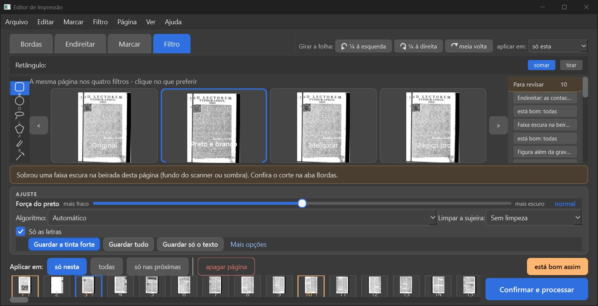
A tela inteira
O que olhar: A foto da estátua fica inteira, como no original.
Na primeira conferência a janela não mandava esta página. Com o conserto, a janela passou a decidir igual à conta direta, e por ela a página vai, por "figura além da gravura". A foto sai intacta: a página não precisava ir.
Ressalva: Não reabri esta página na janela na segunda conferência: o que digo vem da conta das 89 páginas na ordem da janela. É uma das 5 que decidem diferente do estudo.
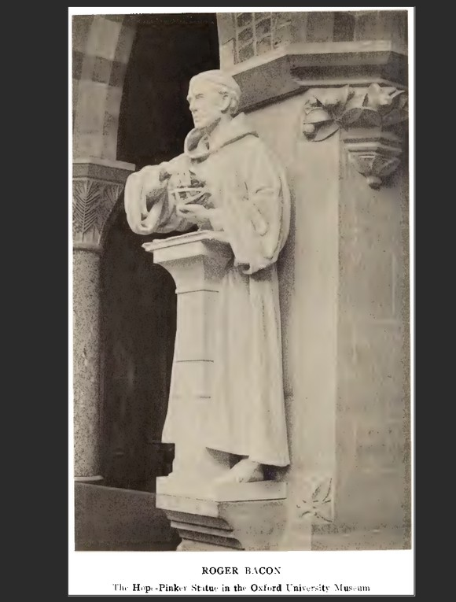
A página como sai, de perto: a foto ficou intacta (print da primeira conferência)
O que olhar: O medidor da força do preto em "normal" e o aviso "Texto falhado" com "usar mais escuro".
Antes o programa escurecia a força sozinho e sujava a moldura desta página de caligrafia. Agora não mexe: mostra o aviso "Texto falhado" e deixa a escolha para a pessoa.
Ressalva: A página continua indo para a lista sem precisar (é uma das 5 que decidem diferente do estudo), mas agora sem estragar nada.
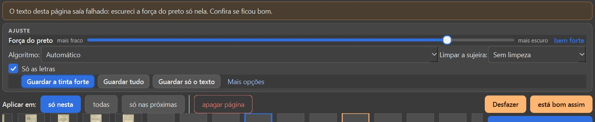
Palatino 66 agora: força normal e o aviso "Texto falhado" (ampliado)
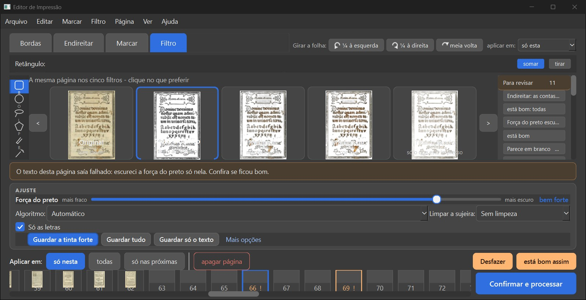
A tela inteira
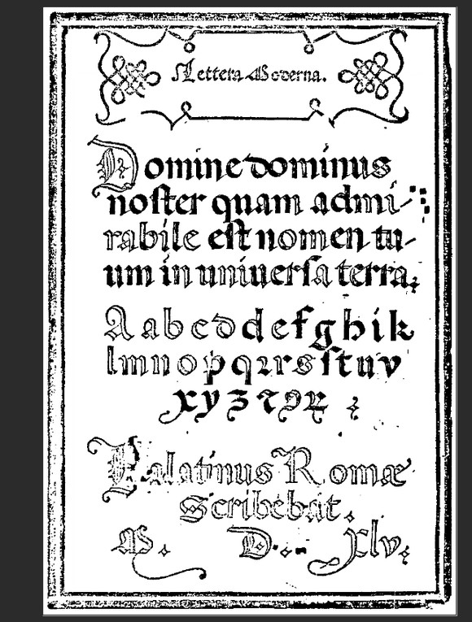
Como saía antes do conserto, com a força escurecida (print da primeira conferência)
O que olhar: A iluminura no meio da página saiu chapada em preto e branco, e há uma faixa preta larga embaixo.
Na primeira visita apareceu o aviso da faixa escura. Depois de visitar mais três páginas, a faixa virou aviso do livro e a página 260 ficou sem aviso nenhum da regra. A iluminura estragada, que era o motivo de ela ir, ninguém avisa.
Ressalva: O aviso da faixa aparece e some conforme a pessoa visita outras páginas (vira aviso do livro quando 70% das páginas medidas têm faixa). No Antiphon cada página levou de 20 a 26 segundos para ser medida. Não mudou nesta rodada e não reabri a página.
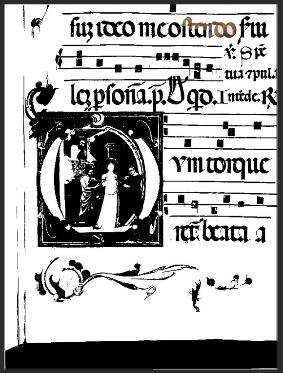
A página 260 como sai em Preto e branco, de perto
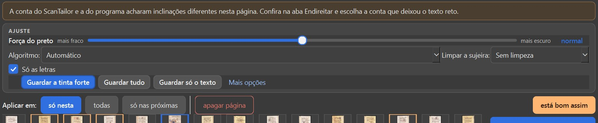
Depois de visitar outras páginas: só o aviso do endireitar
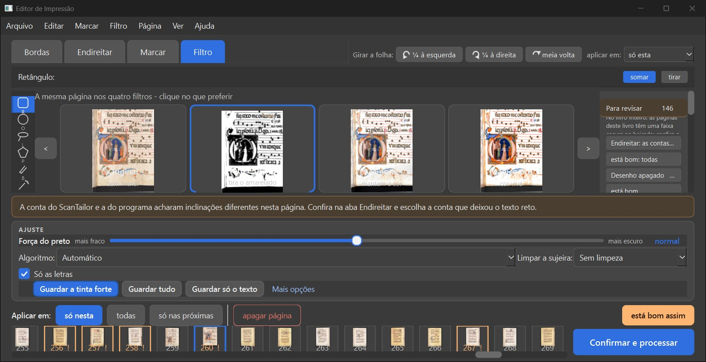
A tela inteira: a faixa virou frase do livro, no alto do painel (meio encoberta pelo título do painel)
O que olhar: O aviso desta página é só o do endireitar. Não há aviso das linhas pretas, nem na página nem no livro.
O Samuel decidiu que basta um aviso no livro. Ele não aparece no Camões: nas 5 páginas que visitei o programa não contou faixa em nenhuma, porque as linhas são finas. As linhas continuam saindo no resultado.
Ressalva: O plano já diz que isso depende do corte (item 2.13). Fica registrado que hoje o Camões não recebe aviso nenhum disso.
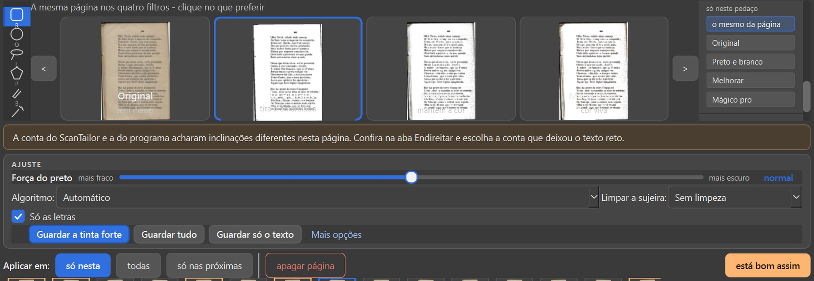
Camões 66: o único aviso é o do endireitar (ampliado)
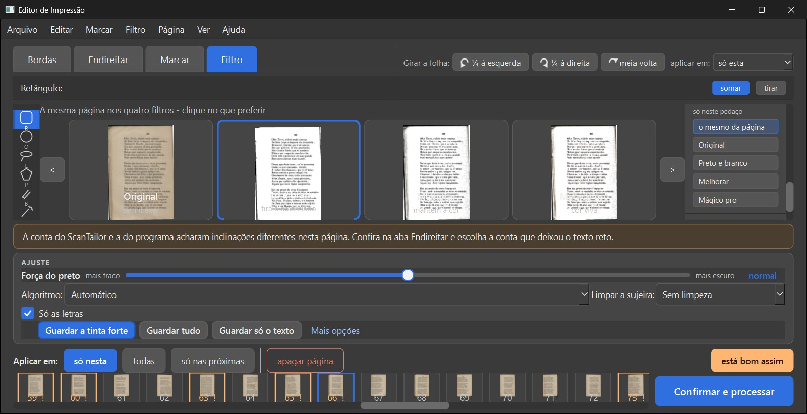
A tela inteira
O que olhar: No ramo, a página 3 mostra "Texto falhado" com a força em "normal": o programa não escureceu sozinho.
Criei um projeto no programa de hoje, com o aviso antigo "Tinta forte fora do texto" em 8 páginas, fechei e abri no ramo. Abriu em 7 segundos, o aviso antigo sumiu sozinho, a força do preto sozinha veio desligada e o erros.log ficou vazio.
Ressalva: Na segunda conferência abri no programa novo um projeto gravado pelo programa da primeira (sem o campo novo da marcação): abriu em 6 s, as áreas da aba Marcar ficaram como estavam (9 áreas ao chegar e 25 segundos depois) e o erros.log ficou vazio. Projeto de antes de 09/10 continua sem conferir (só existe na pasta de dados do Samuel).
No programa de hoje, página 12: o aviso antigo "Tinta forte fora do texto"
O mesmo projeto no ramo, página 12: o aviso antigo sumiu e, depois de medir, veio "Página sem conteúdo"
No ramo, página 3: "Texto falhado", força normal, botão "usar mais escuro"
A tela inteira
O que olhar: As áreas azuis (letra) e verdes (papel) mudam sozinhas uns 10 segundos depois de chegar na página.
Ao chegar numa página nova, a aba Marcar mostra as áreas achadas na página pequena da tela: 9 no Graduale 221. O programa procura de novo, por trás, na página do tamanho do PDF, e troca: 18 áreas, 10,7 segundos depois de chegar. Só acontece uma vez por página. Marquei um retângulo à mão nesse intervalo, na página 5, e ele continuou lá depois da troca.
Ressalva: Quem estiver olhando vê as áreas mudarem sem ter feito nada, e nada avisa que o programa ainda está procurando. Não testei apagar ou mexer numa área do programa nesse intervalo, só marcar uma nova.
Graduale 221 na aba Marcar: ao chegar e 10,7 segundos depois
A tela ao chegar: "Marcado: 4 de letra e traço e 5 de papel"
A tela depois: "Marcado: 7 de letra e traço e 11 de papel"
Página 5: o retângulo que marquei à mão continuou depois do acerto (1 de gravura ou foto)
O que olhar: Depois dos dois cliques, o aviso e os botões laranja continuam na tela.
Dei dois cliques no cartão do Preto e branco na página da letra T. Abriu o "Ver de perto", nada foi gravado no histórico e o aviso continuou de pé.
Depois dos dois cliques e de fechar o "Ver de perto": o aviso continua (ampliado)
A tela inteira
O que olhar: Depois de "Deixar em branco" e da barra de espaço, o programa passou para a página 13.
Os botões do aviso não ficam mais com o teclado. Depois de clicar em "Deixar em branco", a barra de espaço fez "está certo e avança" (antes ela apertava o botão). Com Tab, 40 vezes, o foco nunca parou num botão do aviso.
Ressalva: A seta para a direita não trocou de página na minha janela de teste. Fiz o mesmo no programa de hoje e deu igual: a seta fica na tira de miniaturas ou no medidor da força, que é quem está com o teclado. Não é deste conserto, mas não posso dizer que a seta funciona. A minha janela de teste nunca fica ativa (não tomo o teclado do Samuel).
Depois de "Deixar em branco" na página 12 e da barra de espaço: página 13 (ampliado)
A tela inteira
O que você está escolhendo: em que hora o programa confere as páginas que ninguém abriu. Hoje ele só confere a página que está na tela. As outras só são conferidas na hora de gerar o PDF, quando já não dá para parar.
Por isso a lista "Antes de processar" só mostra as páginas que você visitou. No Antiphonal de 298 páginas, com 2 visitadas, a lista mostrou 2 avisos de desenho apagado; visitei mais 4 e ela passou a mostrar 4. E a força do preto sozinha pode escurecer uma página que ninguém viu.
Conferir uma página custa tempo: na janela, de 4 a 15 segundos nos livros comuns e de 20 a 26 no Antiphon, de folha grande. O implementador mediu, sem a tela, de 13 a 15 minutos para um livro de 300 páginas.
Sugestão do verificador (é minha, não é decisão): "Medir o livro inteiro por trás, depois de abrir", com uma barra de andamento. É a única em que a lista está completa na hora em que o Kaique decide, e a espera acontece enquanto ele já está conferindo.
O que você está escolhendo: o que cada número da tela conta. Hoje são três contas diferentes, e elas aparecem uma atrás da outra.
No Camões (106 páginas): o painel "Para revisar" diz 39, porque conta só os avisos de página. A lista "Antes de processar" diz 75 páginas e 104 avisos, porque junta os avisos de página com os de folha (qualidade baixa, tamanho diferente). E a janela de salvar diz 106, porque conta toda página em que ninguém clicou "está certo".
Quem dá "continuar assim mesmo" para 75 páginas lê, na janela seguinte, que ainda há 106 sem conferir.
Sugestão do verificador (é minha, não é decisão): a janela de salvar contar as páginas com aviso pendente. É o número que aparece por último, logo antes de processar, e hoje é o que mais desmente a lista. Se couber, a primeira opção junto.
O painel de hoje (39): só os avisos de página
A janela de salvar de hoje: 106 páginas
Os três números no Camões: 39, 75 (104 avisos) e 106
O que você está escolhendo: se a página que aparece na tela, no "Só as letras", passa a ser a mesma que vai para o PDF.
Hoje a tela usa uma imagem menor, para ser rápida. No Antiphonal 46 essa imagem mostra a letra T grande; no PDF a letra some. O aviso "Desenho apagado" está certo, mas quem olha a tela vê a letra no lugar.
O programa já desenha por trás a página do tamanho do PDF, para medir os avisos. Ela chega de 4 a 15 segundos depois de abrir a página (20 a 26 em folha grande). Dá para aproveitar essa imagem na tela quase sem custo.
Sugestão do verificador (é minha, não é decisão): trocar sozinha quando chegar. Aviso que manda olhar uma coisa que a tela não mostra não ajuda o Kaique; e a troca só vale no "Só as letras", onde a imagem do PDF já é desenhada de qualquer jeito.
A mesma página 46: a tela (com a letra T) e o PDF que saiu (sem ela)
O "Ver de perto" de hoje, com o aviso de pé: a letra T aparece
Hoje: a marca laranja em volta de uma letra que, na tela, está lá
Antiphonal 1547 (298 folhas), livro novo, clicando no botão ">" 12 vezes parando 1,5 s em cada página e mais 12 sem parar. Tempo até a página nova aparecer, e quanto o programa continua trabalhando por trás depois da última. A medida não enxerga menos que 0,05 s.
| Rodada | Parando 1,5 s: média | do meio | pior | Sem parar: média | do meio | pior | Por trás depois (parando) | Por trás depois (sem parar) |
|---|---|---|---|---|---|---|---|---|
| antes-1, programa de hoje (94f71bd) | 0,86 s | 0,22 s | 3,06 s | 2,62 s | 2,91 s | 4,74 s | 8,6 s | 8,8 s |
| depois-1, ramo (ce2b835) | 0,41 s | 0,14 s | 2,37 s | 2,33 s | 2,60 s | 4,44 s | 44,8 s | 46,6 s |
| antes-2, programa de hoje (94f71bd) | 0,56 s | 0,12 s | 2,87 s | 2,30 s | 2,26 s | 4,48 s | 8,4 s | 9,3 s |
| depois-2, ramo (ce2b835) | 0,47 s | 0,10 s | 2,46 s | 2,21 s | 2,60 s | 4,06 s | 44,1 s | 45,1 s |
Trocar de página não ficou mais lento (o ramo saiu igual ou um pouco melhor nas duas rodadas). O trabalho por trás depois de parar passou de 8 a 9 segundos para 44 a 47. A tela não trava nesse tempo, mas o processador fica ocupado. O implementador mediu uns 22 s contra 3 a 5 s, com o filtro de fábrica; com "Só as letras" deu o dobro.
Marial de 300 folhas, o programa de hoje (fase-1, 94f71bd) contra o ramo (ce2b835), alternando, 2 rodadas de cada. Cada número é o valor do meio das 3 repetições da rodada. O teste não liga o "Só as letras": ele confere que o resto do programa não ficou mais lento; o custo novo (medir a página visitada) não entra nele.
| Rodada | Hora | Memória livre | Processador | Outros Python | Abrir | Trocar (média) | Trocar (pior) | Mágico pro, 10 pág. | Preto e branco, 10 pág. | Memória máxima | Durou |
|---|---|---|---|---|---|---|---|---|---|---|---|
| antes-1 (94f71bd) | 15:35 | 5,20 GB | 12% | 0 | 56,2 s | 2,41 s | 3,53 s | 54,8 s | 26,1 s | 1383 MB | 12,2 min |
| depois-1 (ce2b835) | 15:48 | 4,66 GB | 3% | 0 | 54,6 s | 2,30 s | 3,36 s | 55,4 s | 26,0 s | 1374 MB | 11,7 min |
| antes-2 (94f71bd) | 16:00 | 5,21 GB | 6% | 0 | 55,1 s | 2,31 s | 3,38 s | 54,3 s | 26,1 s | 1384 MB | 11,7 min |
| depois-2 (ce2b835) | 16:11 | 5,17 GB | 7% | 0 | 55,3 s | 2,33 s | 3,43 s | 55,0 s | 26,2 s | 1388 MB | 11,9 min |
| Medida | Antes | Depois | Diferença | Vai-e-vem do antes | Vai-e-vem do depois | Par a par (depois menos antes) | Dá para dizer? |
|---|---|---|---|---|---|---|---|
| Abrir o livro (300 folhas) | 55,7 s | 55,0 s | -0,7 s (-1,2%) | 1,2 s | 0,7 s | -1,6; +0,3 s | não dá para dizer (diferença menor que o vai-e-vem entre rodadas iguais) |
| Trocar de página (média de 20) | 2,36 s | 2,31 s | -0,05 s (-2,1%) | 0,10 s | 0,04 s | -0,12; +0,02 s | não dá para dizer (diferença menor que o vai-e-vem entre rodadas iguais) |
| Trocar de página (a pior das 20) | 3,45 s | 3,40 s | -0,05 s (-1,6%) | 0,15 s | 0,06 s | -0,16; +0,05 s | não dá para dizer (diferença menor que o vai-e-vem entre rodadas iguais) |
| Processar 10 páginas em Mágico pro | 54,6 s | 55,2 s | +0,6 s (+1,1%) | 0,5 s | 0,4 s | +0,6; +0,7 s | mais lento |
| Processar 10 páginas em Preto e branco | 26,1 s | 26,1 s | +0,1 s (+0,2%) | 0,0 s | 0,2 s | -0,0; +0,2 s | não dá para dizer (diferença menor que o vai-e-vem entre rodadas iguais) |
Tempos da medida na janela, na segunda conferência (do clique na página até a medida chegar): Camões 8 a 15 s; Egenloff 11 a 14 s; Antiphonal 8 s; páginas avulsas e pedaços pequenos 2 s. Na primeira: de 4 a 11 s nos livros comuns e de 20 a 26 s no Antiphon.
teste_botoes.py (não rodei).| Data | Bug | |
|---|---|---|
| 13/10/2026 | (para o Samuel decidir) A tela mostra o que o PDF não tem no "Só as letras": Antiphonal 46, a letra T aparece na tela e some no PDF. | img/tela-engana-1-comparacao.jpg |
| 13/10/2026 | (para o Samuel decidir) Painel, lista e janela de salvar contam coisas diferentes: Camões, 39, 75 (104 avisos) e 106. | img/contagens-1-lado-a-lado.jpg |
| 13/10/2026 | (para o Samuel decidir) A lista "Antes de processar" só traz as páginas visitadas. | img/medir-1-listas.jpg |
| 13/10/2026 | Depois de folhear 12 páginas com "Só as letras", o programa trabalha por trás de 44 a 47 s (programa de hoje: 8 a 9 s). Não trava a tela. | (sem print: está na saída dos roteiros p32 e p33) |
| 13/10/2026 | Na aba Marcar as áreas mudam sozinhas uns 10 s depois de chegar na página (Graduale 221: 9 viram 18) e nada avisa que o programa ainda está procurando. | img/marcar-1-antes-e-depois.jpg |
| 13/10/2026 | A seta do teclado não troca de página quando o teclado está na tira de miniaturas ou no medidor da força (visto na janela de teste, igual no programa de hoje e no ramo). | (sem print: está na saída dos roteiros p32 e p33) |
| 13/10/2026 | Egenloff 3 com a força em 85: a frase do aviso "Texto falhado" ainda manda tentar a força mais escura (o botão já não aparece). | img/forca-7-egenloff-3-forca-85-recorte.jpg |
| 13/10/2026 | Continuam, sem ser deste conserto: "Parece em branco" errado na Gladstone 18; faixa preta do corte no Cursus 3; iluminura do Antiphon 260 chapada e sem aviso; Camões 66 sem aviso das linhas pretas. | img/parece-em-branco-1-recorte.jpg |
scripts/piloto.py, scripts/v.py); as leituras do estado só leem. Ida às páginas: arrastando a barra da tira de miniaturas e clicando na miniatura.trabalho/dados_teste (fora do git). A pasta de dados do Samuel não foi usada. O erros.log de teste ficou vazio em todas as sessões.scripts/desenhar.py e scripts/ver_pdf.py (a página na tela contra a do PDF), scripts/ordem_da_medida.py e scripts/conferir_89_como_a_janela.py (as 89 páginas na ordem da janela; resultado em conferir-89-como-a-janela.json), velocidade/ (as quatro rodadas).img/. Abri 41 uma a uma; as outras 17 são a tela inteira ou o recorte da mesma captura de uma que abri. Sete prints tinham saído com a imagem velha da janela (o primeiro print depois de abrir o programa); achei por máquina (scripts/achar_prints_velhos.py), refiz os que entram aqui e nenhum velho ficou em img/.git merge origin/fase2-para-revisar (ce2b835). Pasta de dados nova (trabalho/dados_teste2), para todo livro ser livro novo. Roteiros scripts/q1_consertos.py (os pontos 1, 2, 3, 4, 6, 7 e 8), q2_setas.py, q3_camoes_contagens.py (pontos 5 e 7 e as contagens), q4_folhear.py, q5_processar_e_antigo.py.velocidade-antes-pr (origin/fase-1, 94f71bd), porque a velocidade-antes estava em uso por outro verificador. O fase-1 de hoje não tem código que o ramo não tenha: a diferença entre os dois é só este trabalho.ce2b835 do programa. A primeira conferência (commit 2d820d6 deste ramo) foi em 36b9e32.Editor de Impressão · gerado em 13/10/2026 às 17:19